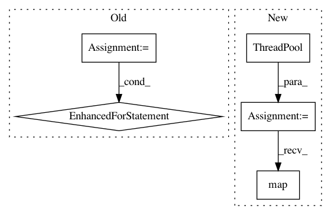

c65e214c4c9b6c9db4d333851436d31f1e26c367,darkflow/net/flow.py,,predict,#Any#,99
Before Change
// Post processing
self.say("Post processing {} inputs ...".format(len(inp_feed)))
start = time.time()
for i, prediction in enumerate(out):
self.framework.postprocess(prediction,
os.path.join(inp_path, this_batch[i]))
stop = time.time(); last = stop - start
// Timing
self.say("Total time = {}s / {} inps = {} ips".format(
After Change
// Post processing
self.say("Post processing {} inputs ...".format(len(inp_feed)))
start = time.time()
pool = ThreadPool()
pool.map(lambda p: (lambda i, prediction:
self.framework.postprocess(
prediction, os.path.join(inp_path, this_batch[i])))(*p),
enumerate(out))
stop = time.time(); last = stop - start
// Timing
self.say("Total time = {}s / {} inps = {} ips".format(
In pattern: SUPERPATTERN
Frequency: 3
Non-data size: 5
Instances
Project Name: thtrieu/darkflow
Commit Name: c65e214c4c9b6c9db4d333851436d31f1e26c367
Time: 2017-05-21
Author: lilohuang@users.noreply.github.com
File Name: darkflow/net/flow.py
Class Name:
Method Name: predict
Project Name: QUANTAXIS/QUANTAXIS
Commit Name: 81367c60491717618de2f4bcf17c63b5c6aebcc7
Time: 2017-05-30
Author: yutiansut@qq.com
File Name: QUANTAXIS/QASU/save_tushare.py
Class Name:
Method Name: QA_save_stock_day_all
Project Name: erikbern/ann-benchmarks
Commit Name: 1cf237ea229079bb2d922ba4389c66d4ad65305c
Time: 2021-01-19
Author: maau@itu.dk
File Name: ann_benchmarks/algorithms/base.py
Class Name: BaseANN
Method Name: batch_query